Faça lives IRL na Twitch e no YouTube com overlays ao vivo direto do celular
Baixar no Google Play17 idiomas. Requer Android 10 ou superior e pelo menos 3 GB de RAM.
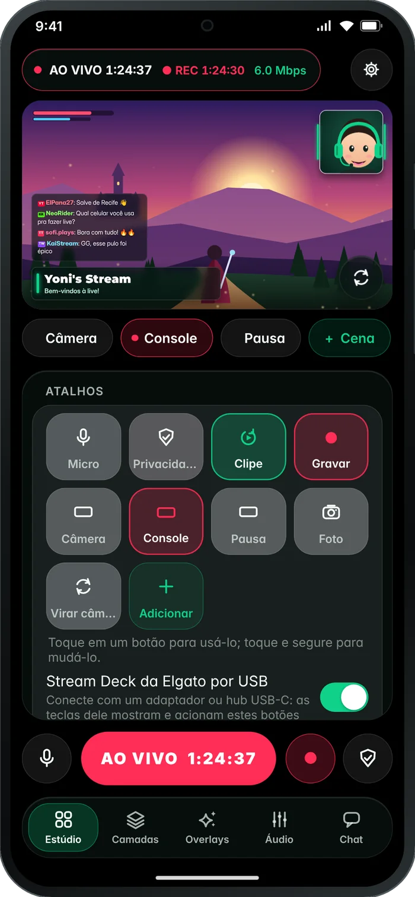
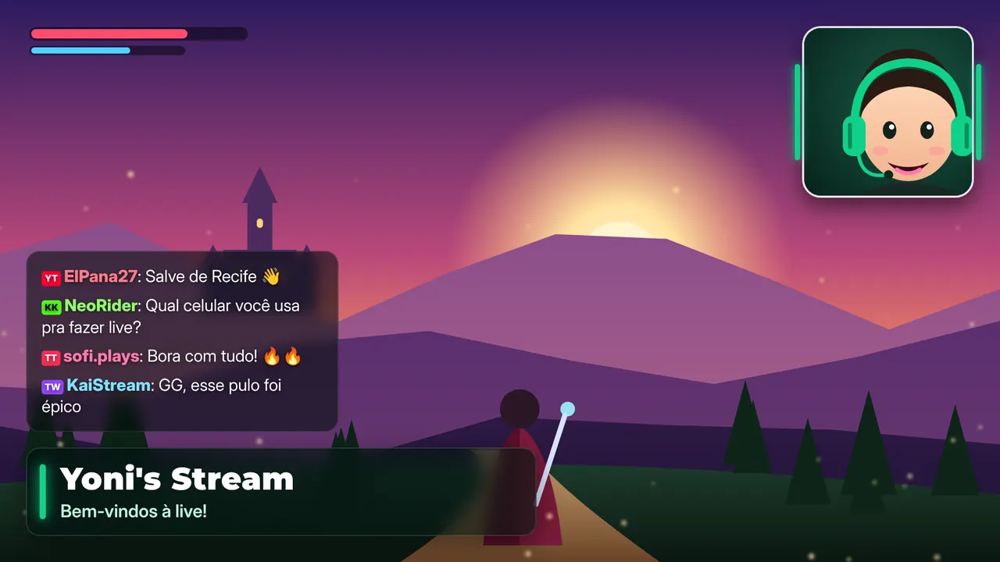
AO VIVO 6.0 Mbps · 60 fps
Yoni's StreamO Yoni's Stream transforma seu Android em um estúdio de produção completo: cenas, camadas, mixer de áudio, alertas e multistream, sem precisar de PC.
Deslize e entre ao vivo
UM ESTÚDIO NO SEU BOLSOOVERLAYS AO VIVOMULTISTREAM E GRAVAÇÃOÁUDIO PROFISSIONALCONSOLES, PLACAS DE CAPTURA E CÂMERASASSISTENTE INTELIGENTEUM ESTÚDIO NO SEU BOLSOOVERLAYS AO VIVOMULTISTREAM E GRAVAÇÃOÁUDIO PROFISSIONALCONSOLES, PLACAS DE CAPTURA E CÂMERASASSISTENTE INTELIGENTE
UM ESTÚDIO NO SEU BOLSOOVERLAYS AO VIVOMULTISTREAM E GRAVAÇÃOÁUDIO PROFISSIONALCONSOLES, PLACAS DE CAPTURA E CÂMERASASSISTENTE INTELIGENTEUM ESTÚDIO NO SEU BOLSOOVERLAYS AO VIVOMULTISTREAM E GRAVAÇÃOÁUDIO PROFISSIONALCONSOLES, PLACAS DE CAPTURA E CÂMERASASSISTENTE INTELIGENTE
Capturas de tela
Veja por dentro
Capturas em
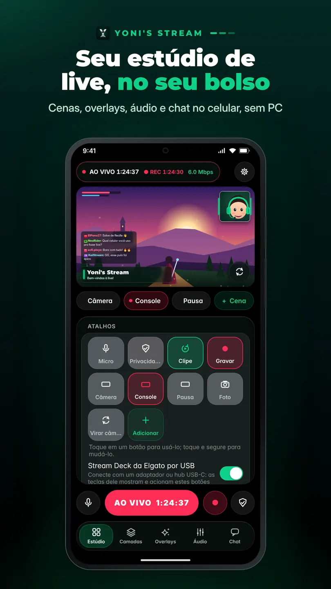
UM ESTÚDIO NO SEU BOLSOCenas com camadas: câmera traseira e frontal, tela e jogos do celular, imagens, vídeos, textos, navegador e chat.
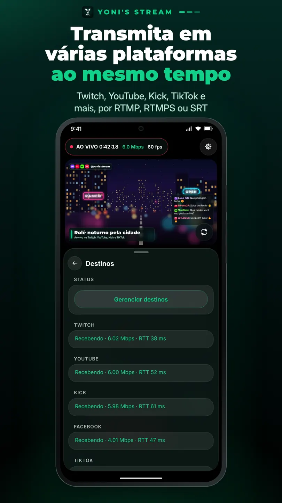
MULTISTREAM E GRAVAÇÃOTransmita para várias plataformas ao mesmo tempo por RTMP, RTMPS ou SRT: Twitch, YouTube, Kick, TikTok LIVE, Instagram Live, Facebook, X ou seu próprio servidor.
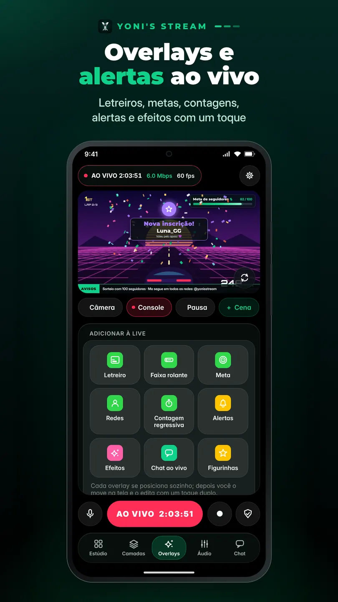
OVERLAYS AO VIVOAlertas automáticos de subs, bits, raids, Super Chats, membros, Kicks e presentes do TikTok, com sons e efeitos (confete, corações, fogos de artifício…).
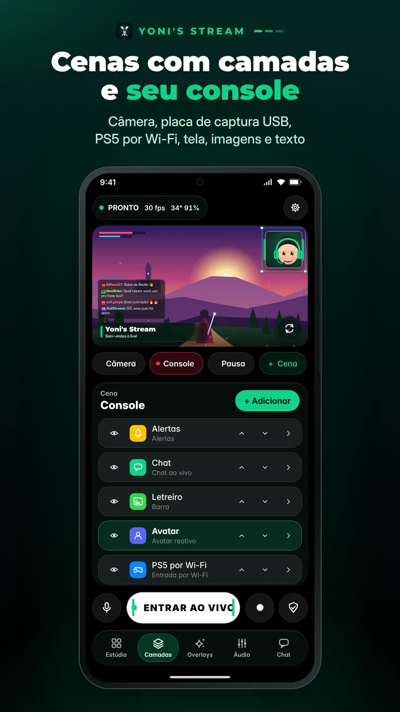
CONSOLES, PLACAS DE CAPTURA E CÂMERASPS5 e PS4 por Wi-Fi sem placa de captura, um PC com OBS ou outro celular como transmissor.
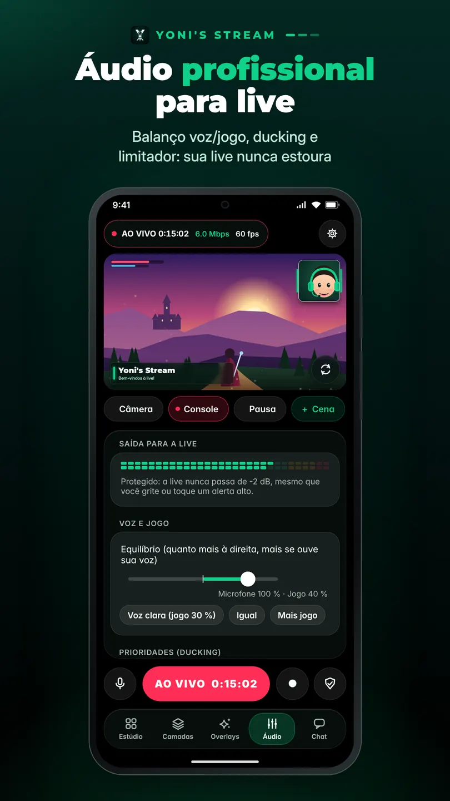
ÁUDIO PROFISSIONALBalanço voz/jogo, ducking, supressão de ruído, compressor e limitador de saída.
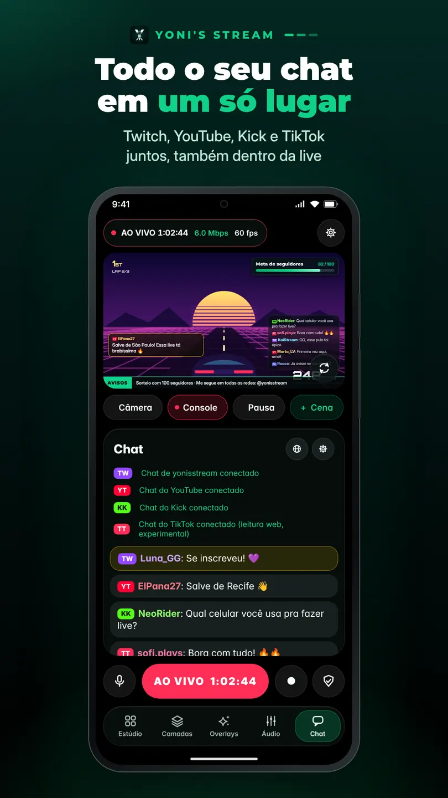
OVERLAYS AO VIVOChat da Twitch, YouTube, Kick, TikTok e Discord juntos na live, com leitura em voz alta.
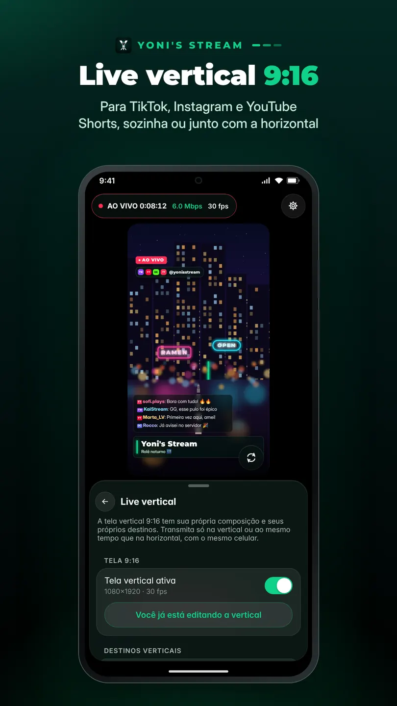
UM ESTÚDIO NO SEU BOLSOCanvas horizontal 16:9 e vertical 9:16 ao mesmo tempo, para TikTok, Instagram e YouTube Shorts.
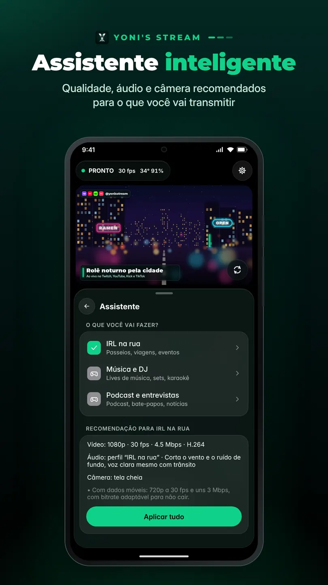
ASSISTENTE INTELIGENTERecomenda qualidade, áudio e posição da câmera conforme o seu jogo ou atividade e a sua conexão.
Recursos
Tudo o que a sua live precisa
Faça lives IRL na Twitch e no YouTube com overlays ao vivo, direto do seu celular. Grave seus vídeos com overlays como um profissional.
01 / 06
UM ESTÚDIO NO SEU BOLSO
Cenas com camadas: câmera traseira e frontal, tela e jogos do celular, imagens, vídeos, textos, navegador e chat.
Modo estúdio com prévia e transições: corte, fade, deslizar, mover e stinger.
Canvas horizontal 16:9 e vertical 9:16 ao mesmo tempo, para TikTok, Instagram e YouTube Shorts.
Escudo de privacidade: cobre a live durante uma ligação ou quando você sai do jogo.
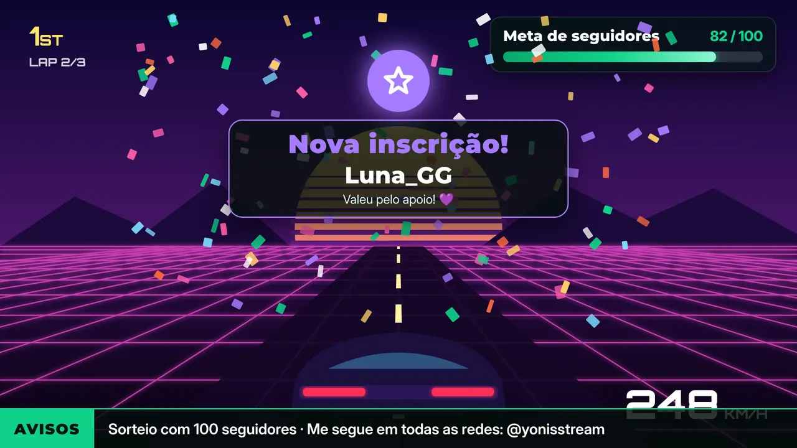
02 / 06
OVERLAYS AO VIVO
Barras, letreiros, tickers, metas, contagens regressivas e suas redes, com mais de 2000 fontes.
Alertas automáticos de subs, bits, raids, Super Chats, membros, Kicks e presentes do TikTok, com sons e efeitos (confete, corações, fogos de artifício…).
Comandos do chat para o seu público disparar efeitos e sons.
Chat da Twitch, YouTube, Kick, TikTok e Discord juntos na live, com leitura em voz alta.
Exporte seus overlays para o OBS e o Streamlabs, ou importe os seus.
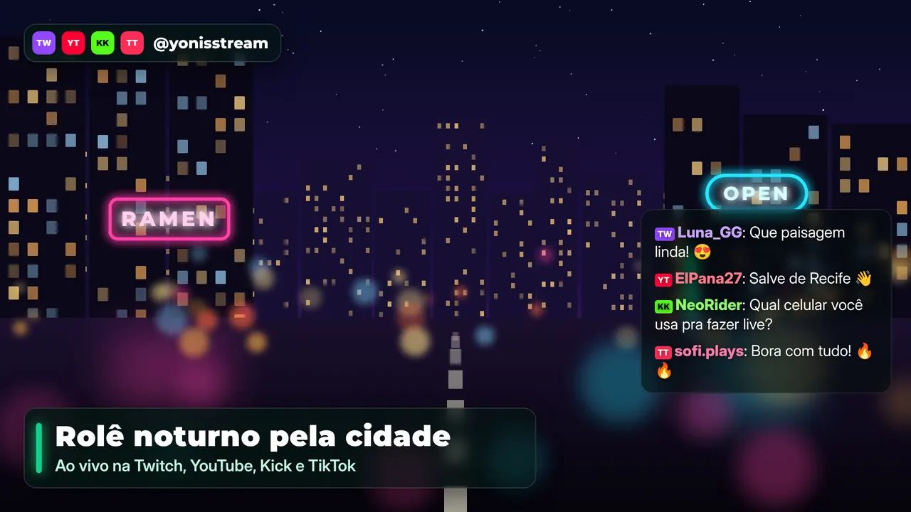
03 / 06
MULTISTREAM E GRAVAÇÃO
Transmita para várias plataformas ao mesmo tempo por RTMP, RTMPS ou SRT: Twitch, YouTube, Kick, TikTok LIVE, Instagram Live, Facebook, X ou seu próprio servidor.
Grave em até 4K a 60 fps com pausa e salve clipes dos últimos segundos.
H.264 e HEVC por hardware, bitrate adaptativo e reconexão automática.
Controle de temperatura e bateria para lives de várias horas.
0 dB−6−12−24−48
04 / 06
ÁUDIO PROFISSIONAL
Mixer com microfone, áudio interno de jogos e apps, música e efeitos sonoros.
Balanço voz/jogo, ducking, supressão de ruído, compressor e limitador de saída.
Perfis prontos: jogo e voz, bate-papo, podcast, música de fundo, ASMR e IRL na rua.
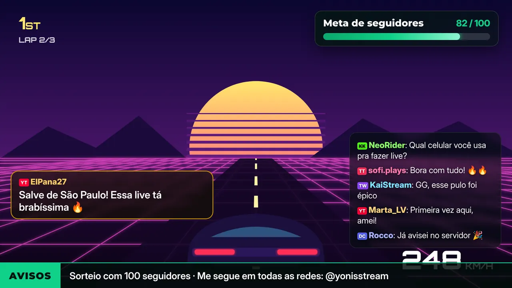
05 / 06
CONSOLES, PLACAS DE CAPTURA E CÂMERAS
Placas de captura USB (UVC), incluindo Elgato.
PS5 e PS4 por Wi-Fi sem placa de captura, um PC com OBS ou outro celular como transmissor.
Câmeras IP por RTSP e câmeras de ação por RTMP.
Stream Deck da Elgato por USB e botões de atalho na tela.
1080p60 fps6.0 MbpsH.26448 kHzHEVC
06 / 06
ASSISTENTE INTELIGENTE
Recomenda qualidade, áudio e posição da câmera conforme o seu jogo ou atividade e a sua conexão.
No seu tablet também
Canvas, painel e controles à vista ao mesmo tempo.
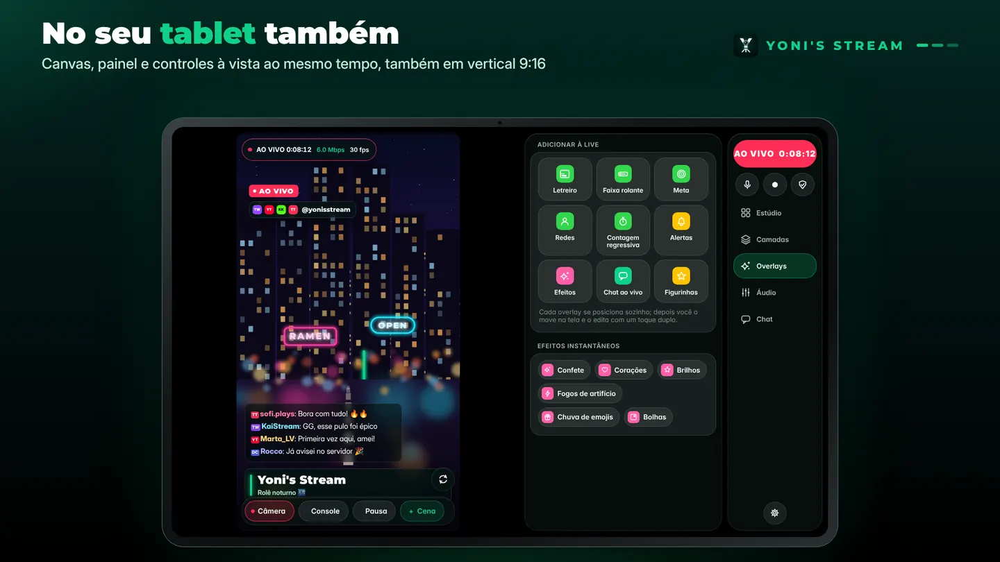
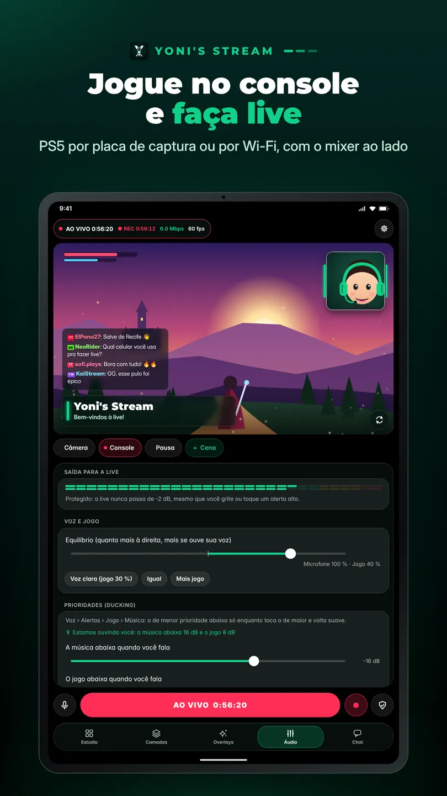
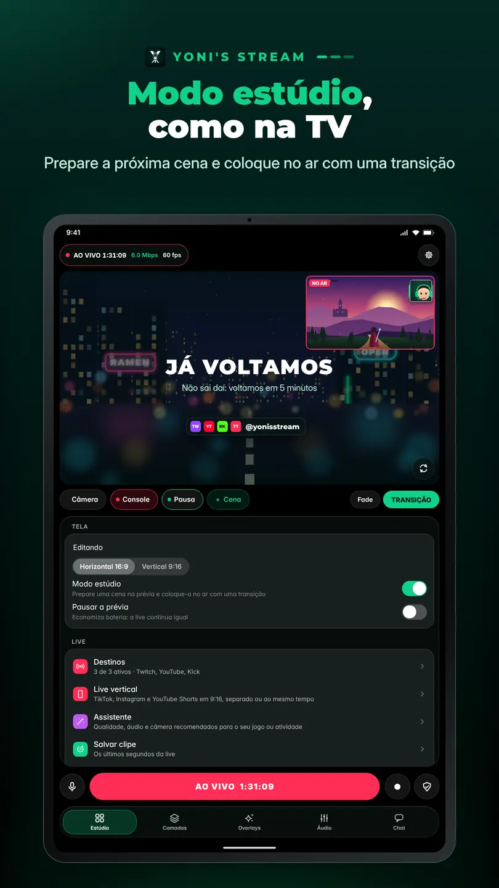
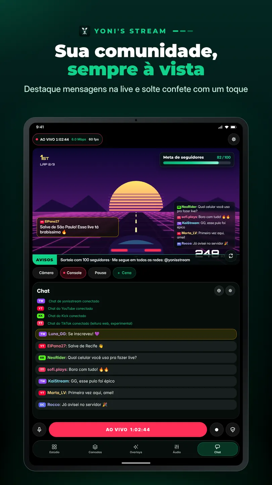
PLANOS
Sem plano: monte cenas e overlays.
Teste grátis de 5 dias (contas novas): live e gravação até 1080p a 30 fps, 2 h por dia.
Deluxe Studio: até 1080p a 60 fps, 5 h de live por dia, multistream para 3 plataformas e reconexão automática.
Streamer: tudo sem limites (4K60, cenas e overlays ilimitados, todas as plataformas, Stream Deck, placas de captura e câmeras profissionais, todas as fontes, perfis de áudio, filtros, assistente e leitura do chat).
As assinaturas são renovadas todo mês e você pode cancelar quando quiser no Google Play.
PRIVACIDADE
Sem anúncios e sem rastreamento. Seu vídeo vai só para as plataformas que você escolher; suas cenas e chaves ficam no seu celular e, se quiser, no seu próprio Google Drive.
Um sinal, cinco saídas
Me siga em todo lugar
Lives, dicas e novidades do Yoni's Stream. Escolha sua rede favorita e não perca nada.
Me encontre noInstagramYouTubeTikTokTwitchKickInstagram